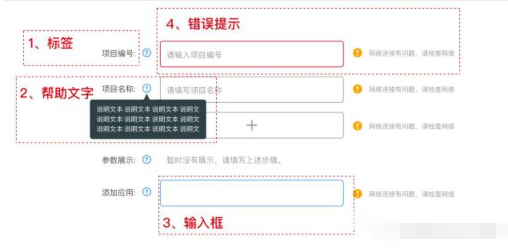
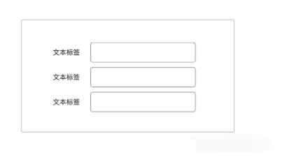
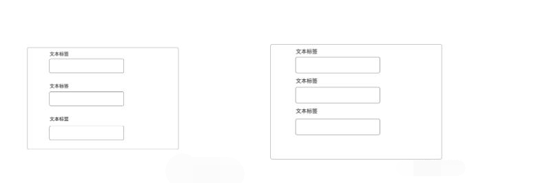
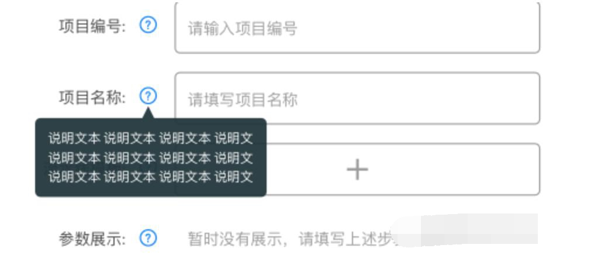
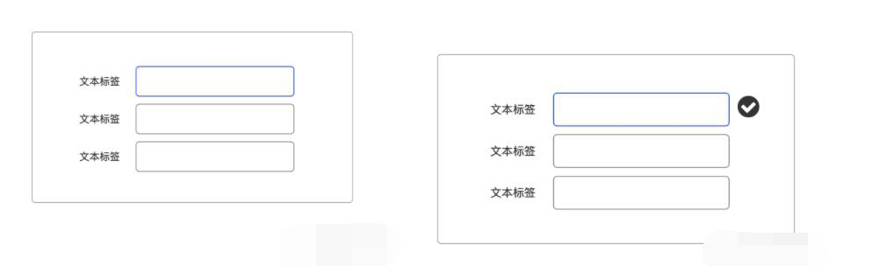
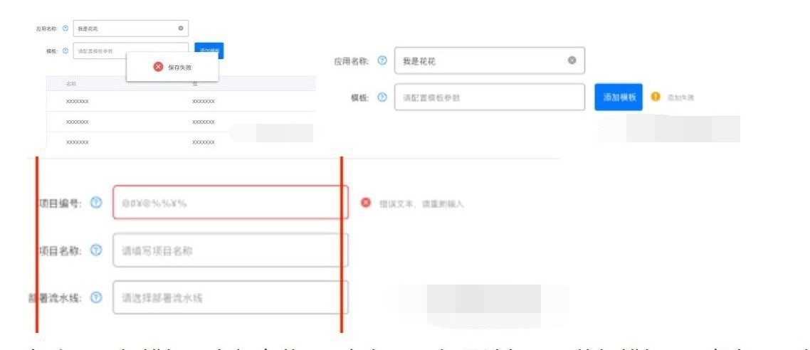
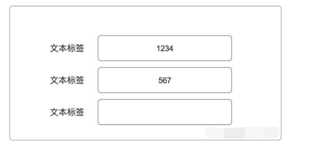

如何设计表单？
分享人：赵跃
一、小课堂目标
二、知识点介绍
三、布局小建议
四、标签的设计
五、帮助性信息
六、输入框的设计
七、报错提示
八、自动配置
九、尺寸和录入量、格式
十、录入信息的分组
十一、提高反馈报错和帮助信息的可见度
十二、总结
十三、参考文献
一、小课堂目标
了解在表单设计中，我们需要注意哪些内容。
二、知识点介绍
表单是承载信息和展示信息的重要途径，因此我们在设计的时候要注意很多事情。
表单的组成：
标签
帮助文字
输入框
报错提示

三、布局小建议
我们尽量采用单列进行展示。
建议这样做的原因一是能够方便用户进行浏览和输入，二是因为这样布局，能够进行响应式的开发，减少了成本。
但是其自身也存在着缺点，当需要输入的条件过多时，用户需要拖动鼠标进行查看与填写。
四、标签的设计
标签的位置主要分成三种：左标签、顶标签、和内标签。
而关于是否要有必填和选填的存在，个人认为，选填是否存在是可以被考究的。

左标签是目前比价主流的排布方式，主要适用于web端。
建议将标签靠左对齐，因为不仅在界面上会显得比较争气划一，在用户对信息的提取和响应也会效率大大提高。
但是它存在着一个比较尴尬的问题，也就是空间的占用上，用于web倒也没有什么问题。
但是当如果用于移动端，则会出现需要左右滑动，信息填写被覆盖等问题。

顶部标签很好的解决了左标签的尴尬处境，但是自身也存在着问题。
也就是当需要填写较多信息的时候，出现滚动的场景几率也就相对较大。
这里要注意的是在使用顶部标签的时候，我们要注意输入框与输入框之间的距离。

将标签放进输入框中是一个很好的解决方式。
但是随之而来的还有，当我填写信息的时候，输入框任何指示信息也没有，会让用户产生困惑的心理。
那我们要如何解决呢？我们可以将图标放入输入框中或者放在左侧。
五、帮助性信息

气泡框提示的内容要求简洁易懂，鼠标放上去则迅速展开提示内容，鼠标移开则消失。
注意：展开的时候不宜挡住当前输入区域，这么做的原因是让用户知道我处于什么地方，我在针对什么。
六、输入框的设计

在进行信息录入的过程中，我们要保持输入框的独特性（录入前、录入中、录入后）
录入前和输入中 我们要使输入框高亮，让用户只专注于当前的录入，
录入后要给出反馈，是录入失败还是录入成功
七、报错提示

如上图，报错提示有很多种，要根据不同场景选择不同的报错提示。
假如只是针对单个输入框的判断，则仅需在当前状态进行报错，文字提示和输入框颜色、样式、变化都可以。
但是如果是重大操作结果报错，我们还是优先选择用模态框的方式进行报错。
这样的好处是能更好的提醒用户错误的结果，也能中断用户的操作，让用户专心思考和检查之前的信息。
八、自动配置

我们在设计的过程中，要尽量减少用户的输入次数。
有些信息，我们可以通过自动补全，或者提供默认值等方式减少用户的输入时间，毕竟用户输入信息只是一个过程。
九、尺寸和录入量、格式

很多数据已经证明根据内容作出适当的尺寸，能够大幅减少用户的不确定性，以及一些特定的信息（手机、银行卡等）采用特定的录入格式都会让用户的体检更加良好。
十、录入信息的分组
将同类信息进行分组，这样即使是很多的信息叠加在一起，用户在输入上的心理压力也会大大减小。
十一、提高反馈报错和帮助信息的可见度
用户在输入信息的过程中，当遇到磕绊或者提示时，证明用户正处在迷茫的状态。
这时候表达要发挥它的易操作、易理解、以及可见性，来进行指导用户走出迷茫。
十二、总结
好的表单设计，在使用上是高效的，友好的，体验统一的。
在设计的初期，要对录入信息进行充分的了解，有个大概的逼数。
十三、参考文献
表单设计的九个基本法则—————人人都是产品经理
表单设计全攻略—————人人都是产品经理
表单设计，你只需要这一篇就够了—————人人都是产品经理
5个纬度，阐述表单设计的方法论—————人人都是产品经理